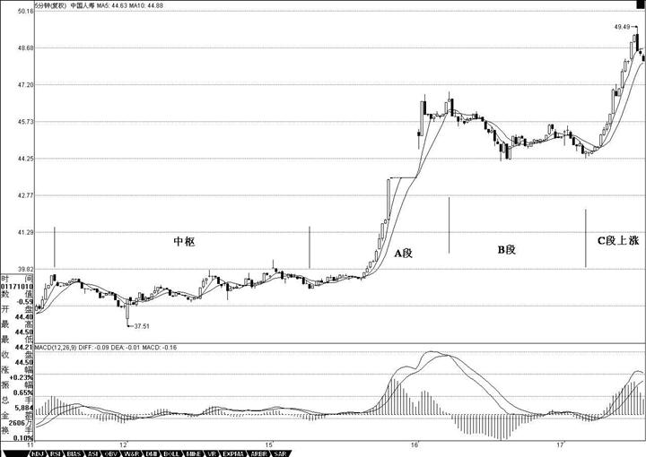
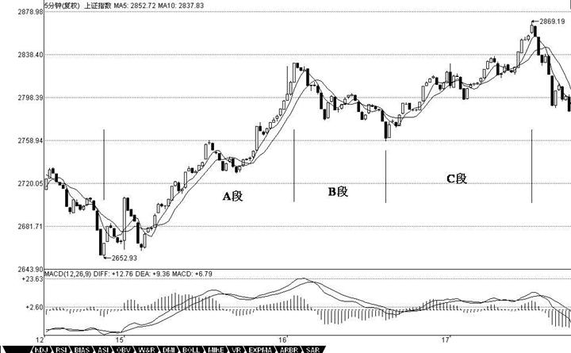
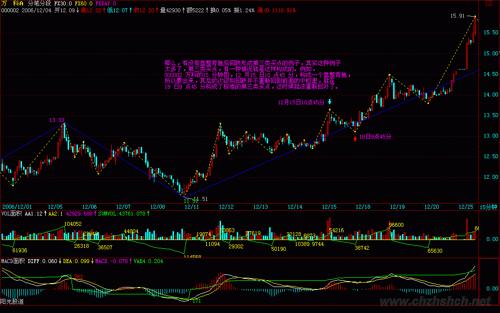

|
 |
教你炒股票24：MACD 对背弛的辅助判断
2007-01-18 15:02:43 这一章完全不在计划之中，其实该问题以前已说过，现在有点炒冷饭。但发现这里的人，绝大多数还是搞不懂，也就不妨结合点例子再说一次。要完全解决背弛问题，必须对中枢进行更进一步的分析，这是以后章节的事情了。但现在大家好象都急于用，而对中枢，好象真理解的没几个，继续深入下去，浅的都一团浆，深的更没法弄。因此，详细说说MACD 对背弛的辅助判断这样一种不绝对精确，但比较方便，容易理解的方法，对那些还没把握中枢基本分析的人，是有帮助的。也就是说，如果你一时真搞不懂中枢的问题，那就用这个方法，也足以应付一般的情况了。
首先，背弛同样有级别的问题，一个1 分钟级别的背弛，在绝大多数的情况下，不会制造一个周线级别的大顶，除非日线上同时也出现背弛。但出现背弛后必然有逆转，这是没任何商量余地的。有人要问，究竟逆转多少？那很简单，就是重新出现新的次级别买卖点为止。由于所有的买卖点，最终都可以归到某级别的第一类买卖点，而背驰与该种买卖点密切相关，所以可以这样说，任何的逆转，必然包含某级别的背驰，以后用严格的方法，可以证明如下定理：
缠中说禅背驰-买卖点定理：任一背驰都必然制造某级别的买卖点，任一级别的买卖点都必然源自某级别走势的背驰。
该定理的证明这理暂且不说了，换句话说，只要你看到某级别的背驰，必然意味着要有逆转。但逆转并不意味着永远的，例如，日线上向上的背驰制造一个卖点，回跌后，在5 分钟或30 分钟出现向下的背驰制造一个买点，然后由这买点开始，又可以重新上涨，甚至创新高，这是很正常的情况。
用MACD 判断背驰，首先要有两段同向的趋势。同向趋势之间一定有一个盘整或反向趋势连接，把这三段分别称为A、B、C 段。显然，B 的中枢级别比A、C 里的中枢级别都要大，否则A、B、C 就连成一个大的趋势或大的中枢了。A 段之前，一定是和B 同级别或更大级别的一个中枢，而且不可能是一个和A 逆向的趋势，否则这三段就会在一个大的中枢里了。
归纳上述，用MACD 判断背驰的前提是，A、B、C 段在一个大的趋势里，其中A 之前已经有一个中枢，而B 是这个大趋势的另一个中枢，这个中枢一般会把MACD 的黄白线（也就是DIFF 和DEA）回拉到0 轴附近。而C 段的走势类型完成时对应的MACD 柱子面积（向上的看红柱子，向下看绿柱子）比A 段对应的面积要小，这时候就构成标准的背弛。
估计有些人连MACD 的最基本常识都没有，不妨说两句。首先你要打开带MACD 指标的图（千万别问本ID 怎么才会有MACD 的图，本ID 会彻底晕倒的），MACD 上有黄白线，也有红绿柱子，红绿柱子交界的那条直线就是0 轴。上面说的颜色都是通常系统用的，如果你的系统颜色不是这样，那本ID 只能说上面两条绕来绕去的曲线就是黄白线，有时一组向上、有时一组向下的就是红绿柱。本ID 也只能描述到这样地步了，如果还不明白，到任意一个证券部举个牌子，写上“谁是黄白线、谁是红绿柱”，估计会有答案的。
这样说有点抽象，就用一个例子，请看601628 人寿的5 分钟图：11日11 点30 分到15 日10 点35 分构成一个中枢。15 日10 点35 分到16日10 点25 分构成A 段。16 日10 点25 分到17 日10 点10 分，一个标准的三段构成新的中枢，也相应构成B 段，同时MACD 的黄白线回拉0轴。其后就是C 段的上涨，其对应的MACD 红柱子面积明显小于A 段的，这样的背驰简直太标准了。注意，看MACD 柱子的面积不需要全出来，一般柱子伸长的力度变慢时，把已经出现的面积乘2，就可以当成是该段的面积。所以，实际操作中根本不用回跌后才发现背驰，在上涨或下跌的最后阶段，判断就出来了，一般都可以抛到最高价位和买在最低价位附近。

上面是一种最标准的背驰判断方法。那么，背驰在盘整中有用吗？首先，为明确起见，一般不特别声明的，背驰都指最标准的趋势中形成的背驰。而盘整用，利用类似背驰的判断方法，也可以有很好的效果。
这种盘整中的类似背驰方法的应用，称为盘整背弛判断。
盘整中往上的情况为例子，往下的情况反之亦然。如果C 段不破中枢，一旦出现MACD 柱子的C 段面积小于A 段面积，其后必定有回跌。比较复杂的是如果C 段上破中枢，但MACD 柱子的面积小于A 段的，这时候的原则是先出来，其后有两种情况，如果回跌不重新跌回，就在次级别的第一类买点回补，刚好这反而构成该级别的第三类买点，反之就继续该盘整。

那么，有没有盘整背驰后回跌形成第三类买点的例子，其实这种例子太多了，第三类买点，有一种情况就是这样构成的。例如，000002 万科的15 分钟图，12 月15 日10 点45 分，构成一个盘整背驰，所以要出来，其后的次级别回跌并不重新回到前面的中枢里，就在18 日9 点45 分构成了标准的第三类买点，这时候就该重新回补了。
背驰与盘整背驰的两种情况中，背驰是最重要的，一旦出现背驰，其回跌，一定至少重新回到B 段的中枢里，看看601628 人寿昨天的回跌，就一目了然了。而盘整背驰，一般会在盘整中弄短差时用到，如果其间突破中枢，其回跌必须分清楚上面的两种情况。
必须注意，无论背驰与盘整背驰，只要满足上面相应的标准，其技术上都是绝对的，没有任何的或然。问题不在于这种技术的准确性，而在于操作者判断的准确性，也就是说，必须先把什么是背驰，什么是盘整背驰，他们之间的标准是什么，如果连这些都搞不清楚，那是无法熟悉应用这项技术的。
必须说明的是，由于MACD 本身的局限性，要精确地判断背驰与盘整背驰，还是要从中枢本身出发，但利用MACD，对一般人理解和把握比较简单点，而这已经足够好了。光用MACD 辅助判断，即使你对中枢不大清楚，只要能分清楚A、B、C 三段，其准确率也应该在90%以上。而配合上中枢，那是100%绝对的，因为这可以用纯数学的推理逻辑地证明，具体的证明，以后会说到。
----------提问 回复----------
[匿名] KK 2007-01-18 20:42:07 对于上海指数那一个， ＝＝＝＝＝＝＝＝
10点40的第二个红柱子，由于这时候的C段还没有形成一个中枢，根据走势必完美，这C段肯定没完，所以继续。13点05分，第三个红柱子，这时候，把三个红柱子的面积加起来，也没有A段两个红柱子面积和大，显然背驰了，所以要走人了
＝＝＝＝＝＝＝＝ 到第二个红柱子为什么没形成中枢？到次级别图上看已经有三个走势重叠了啊
=== 你首先要搞清楚中枢形成的三段的方向是怎么开始的，不是随便三段就是的。这是最基础的东西，不能到现在还搞不清楚。如果是向上的走势，里面的中枢一定是下-上-下的，向下的相反。
缠中说禅 2007-01-18 21:05:25
[匿名] nn 2007-01-18 20:15:39 楼主好人啊!今天讲的课似乎有点明白了,但实际去看图又有问题了,发现许多股票下跌时看不出有背弛,请问楼主:是否因突发消息导致的急跌就没有背驰出现呢?如这次地产股,谢啦!
=== 谁告诉你没有的？每只都有。万科就不用说了，前面已经分析过。000042是不是地产股票，它的60分钟图上看不出背驰？000046、000006等等，哪个看不出？
要好好研究，不要随便下结论，这样没法提高。
缠中说禅 2007-01-18 21:15:02
[匿名] 笨笨猪 2007-01-18 21:03:47 对前面问招商地产的问题，我也有点疑惑。请博主鉴定吧
===
1分钟图上，4日13点，一个标准的背驰在31。2元的位置上。知道为什么一个1分钟图上的背驰就有如此的杀伤力吗？因为一个快速赶顶的股票，最后段的上升往往就是一分钟上的趋势的延伸，这时候，一旦出现背驰，就会急促下跌到延伸的启动位置。看背驰，一定要结合趋势来看。特别在快速的市场变动节奏中，往往一个很低级别的背驰就造成很快速的下跌，因为是和上涨同样快速和幅度大的。
缠中说禅 2007-01-18 21:36:20
[匿名] 赚到了 2007-01-18 21:30:56 缠MM,问个极端的问题,比如背驰出现时,有个傻庄故意强拉,这样随后的走势就不会逆转,这样的图形用你的理论应该怎么解释呢?
=== 庄家的运转不也在构成走势本身？别把庄家当上帝一样。如果他可以拉抬，自然就不会出现背驰；如果他边拉边出，走势上自然留下痕迹，就是背驰。
注意，走势一切力量的综合结果，没必要单独考虑某种力量。
缠中说禅 2007-01-18 21:42:39
[匿名] KK 2007-01-18 21:34:31
=========== 你首先要搞清楚中枢形成的三段的方向是怎么开始的，不是随便三段就是的。这是最基础的东西，不能到现在还搞不清楚。
如果是向上的走势，里面的中枢一定是下-上-下的，向下的相反。
============ 又重新翻了前面缠中说禅走势中枢的定义： 某级别走势类型中，被至少三个连续次级别走势类型所重叠的部分，称为缠中说禅走势中枢。 还是犯糊涂，这个下－上－下包含了两个中枢么？ 这是一个上涨的趋势， 一定包含至少两个中枢，是不是“下上”的水平区间， 然后后面的“上下”水平区间正好构成两个中枢？
=== 好好把上面的补一下，一个趋势，有两个中枢，因此至少就有6段走势，然后加上前面低部回拉的第一段，最后冲刺的一段，还有连接两个中枢的一段，至少有9段走势是明确无误的。
要多看图，否则怎么会有感觉，人寿5分钟图上，从11日9点55到17日13点05，就是一个最标准的没有出现延伸的完整上涨，自己数数看究竟有多少段？
缠中说禅 2007-01-18 21:47:41
[匿名] 无知 2007-01-18
21:10:29
000682昨天下午收盘候发现macd回抽0轴后红炷显著缩小，早上集合竟价出掉了。不过今天好象没怎么下跌。不知这个背驰判断是否正确，卖得早了吗？
=== 先把趋势搞清楚，该股日线上在干什么？30分钟在干什么？才轮到5分钟的问题。如果30分钟或日线在一个明确的上涨初期时，那5分钟的背驰当然不可能制造太大的回挡。对于3元多的一个上涨初期的股票，一个5分钟的背驰，让他从3。48元回到3。35元，4%的幅度，已经足够了，没人告诉说5分钟背驰就一定要跌50%的。人寿之所以跌得那么多，就是因为背驰前的5分钟是一个快速的急拉，因此对称着跌下来了。而000682不存在这种情况。
＝＝＝＝ 象这种情况就不该卖了吗？卖了找不到买点接回啊。看来要学的还有很多啊！
=== 可以卖，为什么不可以？卖了知道回补就可以，这叫打短差。如果是超级短线的，用1分钟图，卖了，5分钟后就可以回补，当然前提是T+0而且又重新出现买点。
缠中说禅 2007-01-18 22:11:08 2007-01-18 21:45:15
[匿名] 无言 2007-01-18 21:41:51 缠姐,你看错了,我说的是600832日线和周线出现第三买点.另外,今天看了你的新文章,600028中午进去的是5分钟级别的第一买点,根据走势必完美的原则,明天上午还有一次回调,对吗?
==
600832的走势比较复杂，12月8日是一个日线的第三类买点。一般这种买点出现后，肯定会回升，但并不一定就能形成趋势上涨，还可能演化成复杂的中枢扩张，该股就属于后者。因此站在大的角度看，该股现在已经逐步在摆脱这巨大的周线中枢延伸。
1月17日，是一个三段30分钟回拉的日线第三类买点。注意，第三类买点的结束位置不一定是整个回拉的最低位置。因为一个三段回来，C段并不一定创新低。
在复杂的回拉中，还有三角形5段回拉的，只要最后一次回拉不回到原来的中枢就可以了。
缠中说禅 2007-01-18 22:14:31
[匿名] 勇敢的心 2007-01-18 21:48:42 缠主:是否当时没创出新高就不叫背驰，因为还不成趋势？
=== 创出新高也不一定是趋势，要把概念明确区分。所以还有盘整背弛判断
缠中说禅 2007-01-18 22:20:10
[匿名] 勇敢的心 2007-01-18 21:45:51 请问缠主：今天我在11：20看出60198的5分钟背驰，所以下午17.6卖掉600198对吗？
==
5分钟没有什么背驰，1分钟还勉强有，为什么说勉强？因为现在只能看到最低一分钟的，而今天该股一开盘瞬间有一个18元以上的高价，要反映这种走势，必须有1秒种的图才能精确反映。由于交易所不提供这种图，所以在一些超级快速的走势中，1分钟图上都会有点变异，这不是理论的问题，而是交易所不能提供最详尽数据的问题。
一般来说，最精确的、最低级别的图，就是每一笔成交按次序排列而成的图，现在看的1分钟图，已经有点粗糙了。但对于大一点的走势来说，影响不大。
缠中说禅 2007-01-18 22:23:32
[匿名] 大风 2007-01-18 22:19:57 老师问一个问题 只看日线图不可以吗？ 如果可以，那怎么理解缠中说禅走势中枢：某级别走势类型中，被至少三个连续次级别走势类型所重叠的部分。次级别在日线上不就是30分钟图吗？
=== 当然可以，但前提是你永远不打短差，而且只弄特大型的行情，也就是只弄大牛市，从底部一直拿到顶部。而对于中线调整来说，因为很多判断必须用到次级别的走势，甚至次次级别的走势。对于一些快速的走势，例如这两天的房地产，如果不看5分钟或30分钟的图，根本就看不到其中的变盘预告。
缠中说禅 2007-01-18 22:25:07 甘棠 2007-01-18 22:20:33
000989日线10月23日起应该是很明显的背驰，三角形一个比一个小，对吗？
=== 三角形，没有新高，怎么会有背驰？先把概念搞清楚。
缠中说禅 2007-01-18 22:40:17 各位一定要先分清楚趋势和盘整，然后再搞清楚背驰与盘整背驰。盘整背驰里的三种情况，特别是形成第三类买点的情况，一定要搞清楚。注意，盘整背驰出来，并不一定都要大幅下跌，否则怎么会有第三类买点构成的情况。而趋势中产生的背驰，一定至少回跌到B段中，这就可以预先知道至少的跌幅。
此外，对背驰的回跌力度，和级别很有关系，如果日线上在上涨的中段刚开始的时候，MACD刚创新高，红柱子伸长力度强劲，这时候5分钟即使出现背驰，其下跌力度显然有限，所以只能打点短差，甚至可以不管。而在日线走势的最后阶段，特别是上涨的延伸阶段，一个1分钟的背驰足以引发暴跌，所以这一点必须多级别地综合来考察，绝对不能一看背驰就抛等跌50%，世界上哪里有这样的事情。
好了，各位好好研究，先把一些最基础的东西搞清楚。先下，再见。
---------------------------------------------- 1、MACD判断趋势背驰图例分析之一：中国人寿 请看601628人寿的5分钟图：11日11点30分到15日10点35分构成一个中枢。15日10点35分到16日10点25分构成A段。16日10点25分到17日10点10分，一个标准的三段构成新的中枢，也相应构成B段，同时MACD的黄白线回拉0轴。其后就是C段的上涨，其对应的MACD红柱子面积明显小于A段的，这样的背驰简直太标准了。注意，看MACD柱子的面积不需要全出来，一般柱子伸长的力度变慢时，把已经出现的面积乘2，就可以当成是该段的面积。所以，实际操作中根本不用回跌后才发现背驰，在上涨或下跌的最后阶段，判断就出来了，一般都可以抛到最高价位和买在最低价位附近。
2、MACD判断盘整背驰图例分析之二： 上海的5分钟图上，就构成一个标准盘整背驰。12日14点35到16日9点45构成A段，16日9点45到16日13点30构成B段，16日13点30到17日13点05构成C段。其中B段制造了MACD黄白线对0轴的回拉，C段与A段构成背驰。对C段进行更仔细的分析，9点35的第一个红柱，由于并没创新高，所以不构成背驰，10点40的第二个红柱子，由于这时候的C段还没有形成一个中枢，根据走势必完美，这C段肯定没完，所以继续。13点05分，第三个红柱子，这时候，把三个红柱子的面积加起来，也没有A段两个红柱子面积和大，显然背驰了，所以要走人了。而随后的回跌，马上跌回大的中枢之内，所以不可能有什么第三类买点，不过站在超短线的立场，如果出现次级别的第一类买点，又可以重新介入了。
3、盘整背驰后回跌形成第三类买点的例子: 000002万科的15分钟图，12月15日10点45分，构成一个盘整背驰，所以要出来，其后的次级别回跌并不重新回到前面的中枢里，就在18日9点45分构成了标准的第三类买点，这时候就该重新回补了。

|
|
|
|